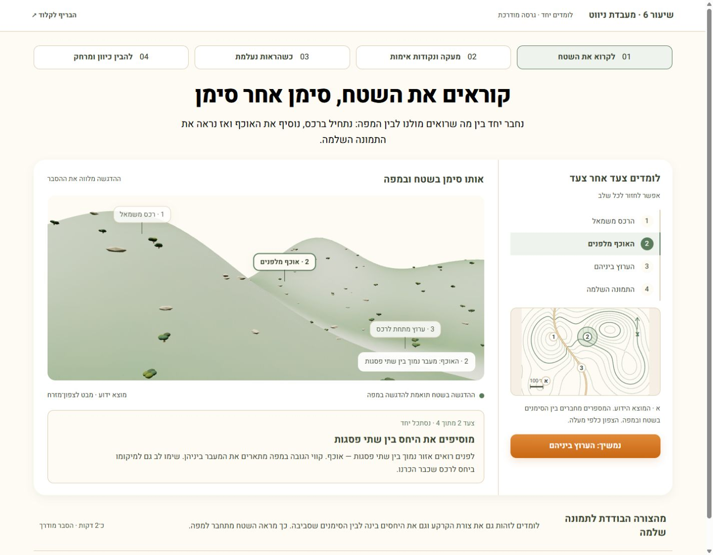
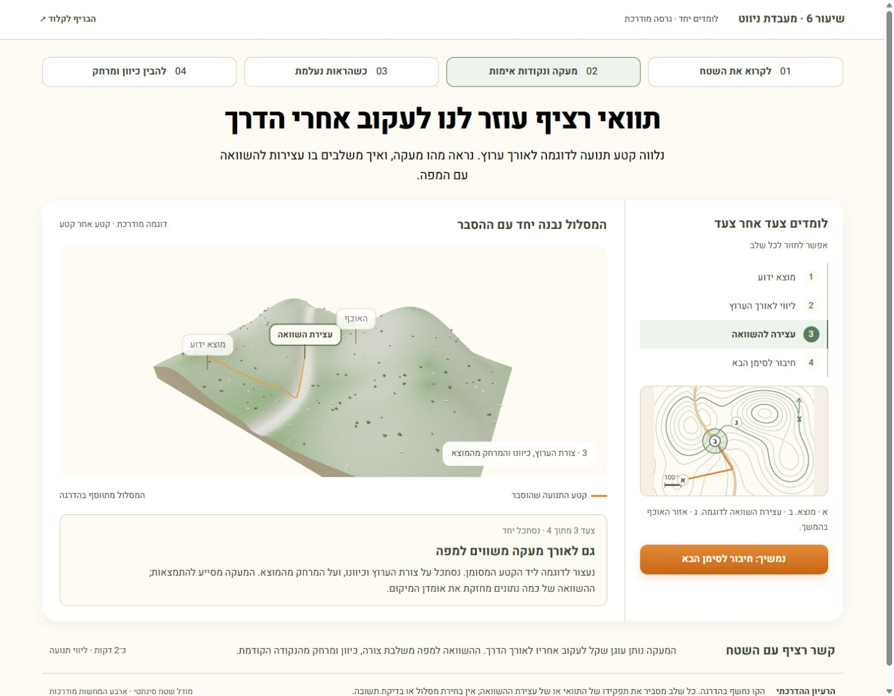
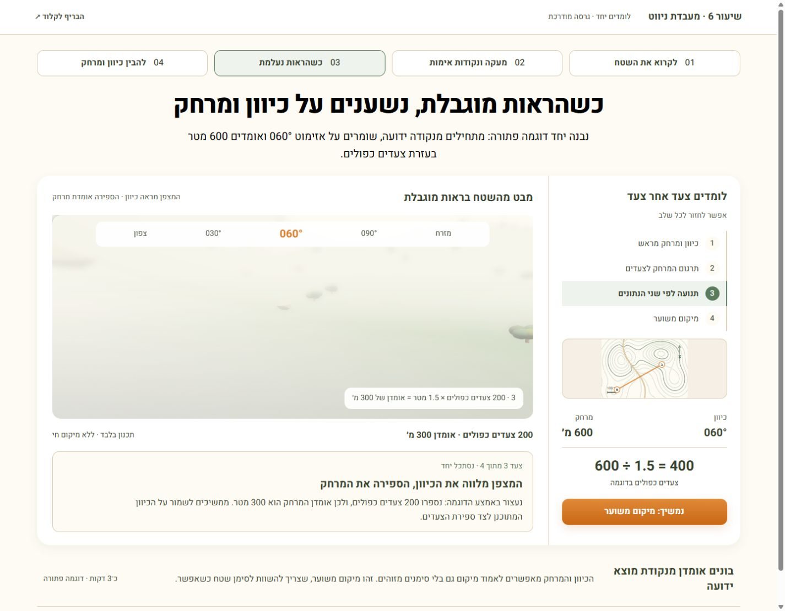
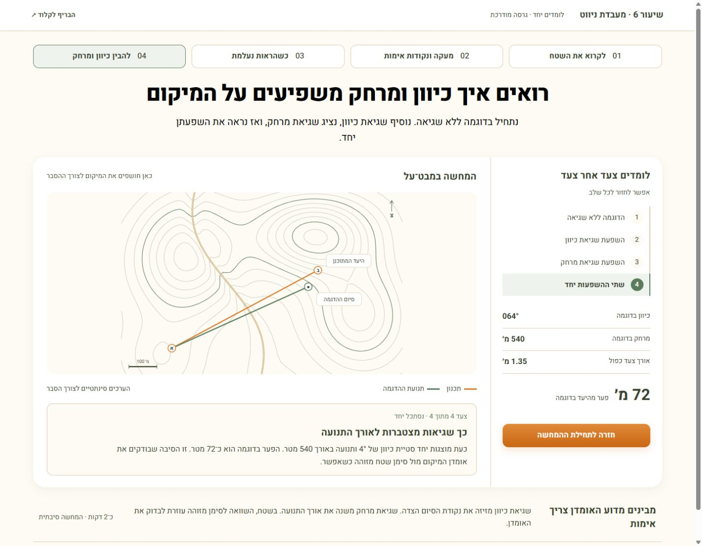

01 · לקרוא את השטח
מחברים יחד רכס, אוכף וערוץ למפה, סימן אחד בכל פעם.
גרסה בהירה ומודרכת · טופוגרפיה וניווט עיוור

מחברים יחד רכס, אוכף וערוץ למפה, סימן אחד בכל פעם.

מלווים תנועה לדוגמה לאורך ערוץ, עם הסבר בכל קטע.

בונים יחד דוגמה פתורה של כיוון, מרחק וספירת צעדים.

רואים בהדרגה איך שינוי בכיוון או במרחק משנה את נקודת הסיום.